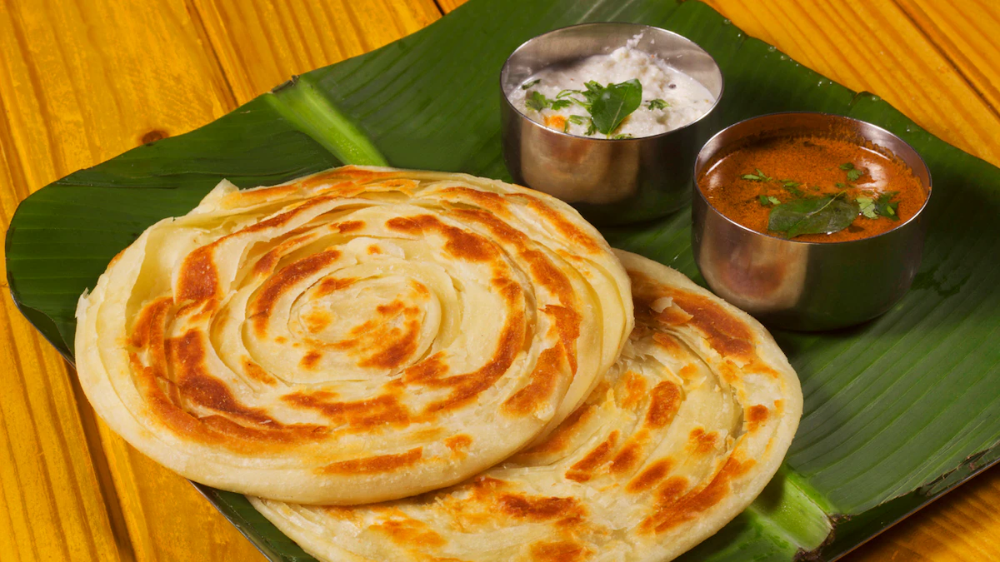

Parotta Recipe

parotta Recipe:
- Make Dal using a mix of toor, moong, chana, urad, and masoor dal, tempered with garlic and spices.
- Prepare Baati by kneading wheat flour, shaping into balls, and baking until golden brown.
- For Churma, crush baatis and mix with sugar, ghee, and dry fruits.
- Make a dough with gram flour, yogurt, and spices.
- Boil small cylindrical dumplings, cut them into pieces, and cook in a spiced yogurt gravy.
- Soak dried ker and sangri overnight.
- Cook with mustard oil, red chilies, and Rajasthani spices.
- Sauté onions and potatoes with mustard seeds, cumin, and red chili powder.
- Cook until soft and well-mixed with the masala.
- Make dough using gram flour, wheat flour, spices, and herbs.
- Roll into flatbreads and cook on a tawa with ghee.
- Prepare a batter using maida, ghee, and chilled water.
- Deep fry in a special mold to get the honeycomb texture.
- Soak in sugar syrup and top with rabri and nuts.
- Arrange small bowls for each curry, dal, and chutney.
- Place baati, roti, and rice on the plate.
- Serve sweets separately in a small dish.
- Offer buttermilk or jaljeera as a refreshing drink.